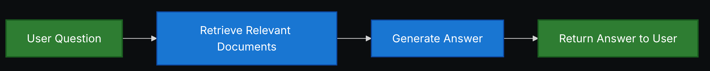
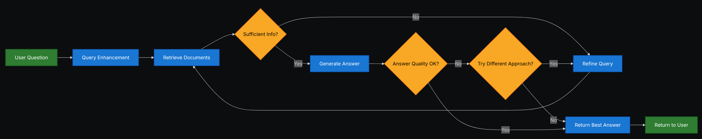

Retrieval¶
Большинство современных LLM обладают двумя ключевыми ограничениями:
- Ограниченный контекст — они не могут загружать целые корпуса данных за один раз.
- Статичные знания — их обучающие данные зафиксированы на определённый момент времени.
Retrieval-Augmented Generation (RAG) — это подход, при котором ответы LLM дополняются контекстно-специфичной информацией.
Retrieval позволяет LLM использовать внешние данные (документы, базы знаний, API и т. д.), оставаясь при этом генеративными системами. Вместо того чтобы заранее кодировать всё знание в параметры модели, Retrieval делает возможным:
- Обновляемое знание: добавление новых документов без переобучения модели.
- Персонализированные ответы: использование пользовательских данных или данных организации.
- Устойчивость: уменьшение галлюцинаций за счёт привязки ответов к источникам.
Построение базы знаний¶
Knowledge base — это хранилище документов или структурированных данных, используемых во время Retrieval. Если вам нужна кастомная knowledge base, вы можете использовать document loaders и vector stores из LangChain, чтобы построить её на основе ваших собственных данных.
Смотрите следующий учебник, чтобы построить поисковую knowledge base и минимальный RAG‑workflow:
Если у вас уже есть существующая knowledge base (например, SQL‑база данных, CRM или внутренняя система документации), вам не нужно её перестраивать. Вы можете:
- Подключить её как tool для агента в Agentic RAG.
- Делать к ней запросы и передавать полученный контент как контекст в LLM (2-Step RAG).
Tutorial: Semantic search¶
В этом разделе вы узнаете, как создать поисковую knowledge base на основе ваших собственных данных с использованием document loaders, embeddings и vector stores из LangChain. В этом tutorial вы построите поисковый движок по PDF‑файлу, что позволит извлекать фрагменты, релевантные запросу. Затем вы реализуете минимальный RAG‑workflow поверх этого движка, чтобы увидеть, как внешние знания могут быть интегрированы в рассуждения LLM.
От Retrieval к RAG¶
Retrieval позволяет LLM получать релевантный контекст во время выполнения запроса. Но большинство реальных приложений идут на шаг дальше: они интегрируют Retrieval с Generation, чтобы производить обоснованные, контекстно‑зависимые ответы. Это и есть основная идея Retrieval-Augmented Generation (RAG). Retrieval‑pipeline становится фундаментом для более широкой системы, которая комбинирует поиск с генерацией.
Retrieval Pipeline¶
Типичный Retrieval‑workflow выглядит так:
- Загрузка данных: использование document loaders для извлечения данных из внешних источников (файлы, базы данных, API и т. д.).
- Предобработка текста: разбиение документов на меньшие фрагменты с помощью text splitters.
- Кодирование: преобразование текстовых фрагментов в embeddings с помощью embedding models.
- Индексация: сохранение embeddings во vector store.
- Retrieval: по неструктурированному запросу пользователь получает релевантные документы через retriever.
- Построение ответа: LLM использует Retrieved документы как контекст для генерации ответа.

Каждый компонент модульный: вы можете заменять loaders, splitters, embeddings или vector stores без переписывания логики приложения.
Базовые блоки¶
Document loaders¶
Document loaders загружают данные из внешних источников (Google Drive, Slack, Notion и т. д.), возвращая стандартизированные объекты Document.
Text splitters¶
Text splitters разбивают крупные документы на меньшие фрагменты, которые затем могут извлекаться по отдельности и помещаться в context window модели.
Embedding models¶
Embedding model преобразует текст в вектор чисел, чтобы тексты с похожим смыслом располагались близко друг к другу в этом vector space.
Vector stores¶
Vector stores — это специализированные базы данных для хранения и поиска embeddings.
Retrievers¶
Retriever — это интерфейс, который возвращает документы по неструктурированному запросу.
RAG Architectures¶
RAG можно реализовать несколькими способами, в зависимости от потребностей вашей системы. Основные типы описаны в следующих разделах.
| Architecture | Description | Control | Flexibility | Latency | Example Use Case |
|---|---|---|---|---|---|
| 2-Step RAG | Retrieval всегда происходит до Generation. Простой и предсказуемый подход. | ✅ High | ❌ Low | ⚡ Fast | FAQs, документационные боты |
| Agentic RAG | Агент на базе LLM решает, когда и как делать Retrieval в процессе рассуждения. | ❌ Low | ✅ High | ⏳ Variable | Research‑ассистенты с доступом к множеству tools |
| Hybrid | Комбинирует характеристики обоих подходов с этапами валидации. | ⚖️ Medium | ⚖️ Medium | ⏳ Variable | Domain‑specific Q&A с проверкой качества |
Latency: задержка в общем случае более предсказуема в 2-Step RAG, поскольку максимальное количество вызовов LLM известно и ограничено. Это предположение справедливо, если основную долю времени занимает LLM‑inference. Однако реальная latency также может зависеть от производительности Retrieval‑шагов — таких как время ответа API, сетевые задержки или запросы к базе данных, — которые варьируются в зависимости от используемых tools и инфраструктуры.
2-Step RAG¶
В 2-Step RAG Retrieval‑шаг всегда выполняется до Generation‑шага. Эта архитектура проста и предсказуема, что делает её подходящей для многих приложений, где получение релевантных документов является явным предварительным условием для генерации ответа.

Типичный 2-Step RAG‑pipeline:
- Принять неструктурированный пользовательский запрос.
- Выполнить Retrieval по knowledge base с помощью retriever.
- Передать Retrieved документы вместе с исходным запросом в LLM.
- Сгенерировать ответ, опираясь на предоставленный контекст.
2-Step RAG особенно полезен, когда:
- Структура задачи понятна и не требует сложного планирования.
- Важно иметь детерминированное количество LLM‑вызовов.
- Knowledge base хорошо структурирована и Retrieval даёт устойчивые результаты.
См. Tutorial: Retrieval-Augmented Generation (RAG), чтобы увидеть пример использования 2-Step RAG‑chain.
Tutorial: Retrieval-Augmented Generation (RAG)¶
В этом tutorial показано, как построить Q&A‑чатбота, способного отвечать на вопросы, опираясь на ваши данные, с использованием Retrieval-Augmented Generation. В walkthrough рассматриваются два подхода:
- RAG agent, который запускает поисковые запросы с помощью гибкого tool — отлично подходит для задач общего назначения.
- 2-step RAG‑chain, который требует всего одного LLM‑вызова на запрос — быстрый и эффективный для более простых задач.
Agentic RAG¶
Agentic Retrieval-Augmented Generation (RAG) сочетает сильные стороны Retrieval-Augmented Generation с agent‑based reasoning. Вместо того чтобы выполнять Retrieval перед ответом, агент (на базе LLM) пошагово рассуждает и решает, когда и как извлекать информацию в ходе взаимодействия.

В Agentic RAG:
- LLM выступает в роли агента, который может вызывать один или несколько tools (включая Retrieval‑tools).
- Агент может чередовать шаги рассуждения и вызовы tools, строя план, уточняя запросы и проверяя гипотезы.
- Retrieval используется только при необходимости, что повышает гибкость и экономит ресурсы в некоторых сценариях.
Пример простого Agentic RAG‑агента, который использует HTTP‑запросы для Retrieval:
import requests
from langchain.tools import tool
from langchain.chat_models import init_chat_model
from langchain.agents import create_agent
@tool
def fetch_url(url: str) -> str:
"""Fetch text content from a URL"""
response = requests.get(url, timeout=10.0)
response.raise_for_status()
return response.text
system_prompt = """\
Use fetch_url when you need to fetch information from a web-page; quote relevant snippets.
"""
agent = create_agent(
model="claude-sonnet-4-5-20250929",
tools=[fetch_url], \# Tool для Retrieval
system_prompt=system_prompt,
)
В этом примере:
fetch_url— это простой Retrieval‑tool, который получает текст по URL.create_agentсоздаёт Agentic RAG‑агента, который может решать, когда вызыватьfetch_url, а когда отвечать, опираясь на уже имеющийся контекст.
См. Tutorial: Agentic RAG with Self-Correction, чтобы увидеть более сложный пример Agentic RAG.
Hybrid RAG¶
Hybrid RAG сочетает характеристики 2-Step и Agentic RAG. Он добавляет промежуточные шаги, такие как предобработка запросов, валидация Retrieval и пост‑проверка ответов. Такие системы предлагают больше гибкости, чем фиксированные pipelines, сохраняя при этом определённый контроль над исполнением.

Типичные компоненты Hybrid RAG:
- Query enhancement: модификация входного вопроса для улучшения качества Retrieval. Это может включать переформулирование неясных запросов, генерацию нескольких вариантов или расширение запроса дополнительным контекстом.
- Retrieval validation: оценка того, насколько Retrieved документы релевантны и достаточны. Если нет, система может уточнить запрос и повторить Retrieval.
- Answer validation: проверка сгенерированного ответа на точность, полноту и соответствие исходному контенту. При необходимости система может сгенерировать ответ заново или скорректировать его.
Hybrid RAG особенно полезен для:
- Приложений с неоднозначными или недостаточно конкретными запросами.
- Систем, в которых требуются шаги валидации и контроля качества.
- Workflow, включающих несколько источников или итеративное уточнение ответов.
См. Tutorial: Agentic RAG with Self-Correction для примера Hybrid RAG‑подхода.
Tutorial: Agentic RAG with Self-Correction¶
Этот tutorial демонстрирует пример Hybrid RAG, который сочетает agentic reasoning с Retrieval и self‑correction. Агент:
- Планирует шаги, решая, когда выполнять Retrieval.
- Проверяет свои ответы по Retrieved источникам.
- При необходимости корректирует или регенерирует ответы, чтобы улучшить точность и согласованность.
В результате получается более надёжная система, чем простой 2-Step RAG, с дополнительным контролем по сравнению с полностью свободным Agentic RAG.
Source: https://docs.langchain.com/oss/python/langchain/retrieval